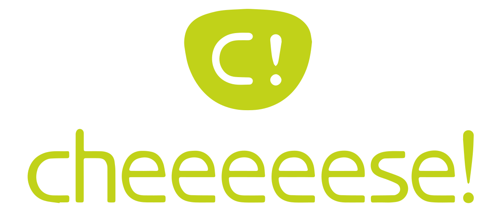
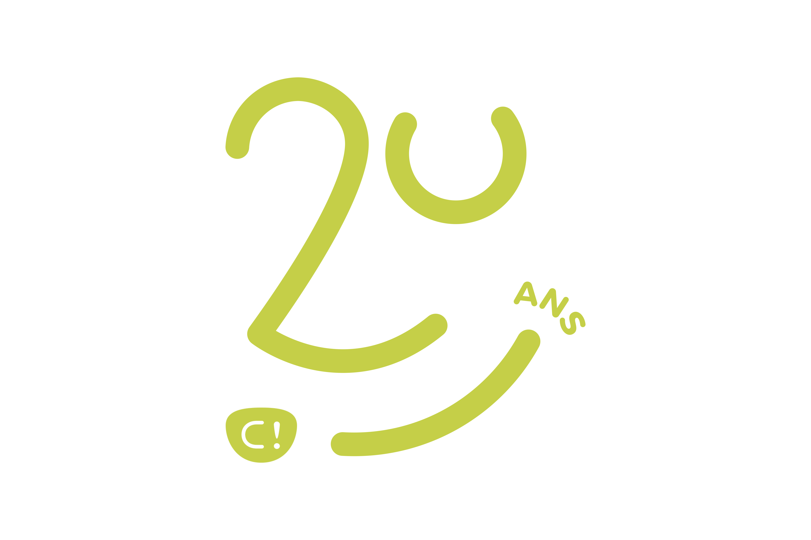
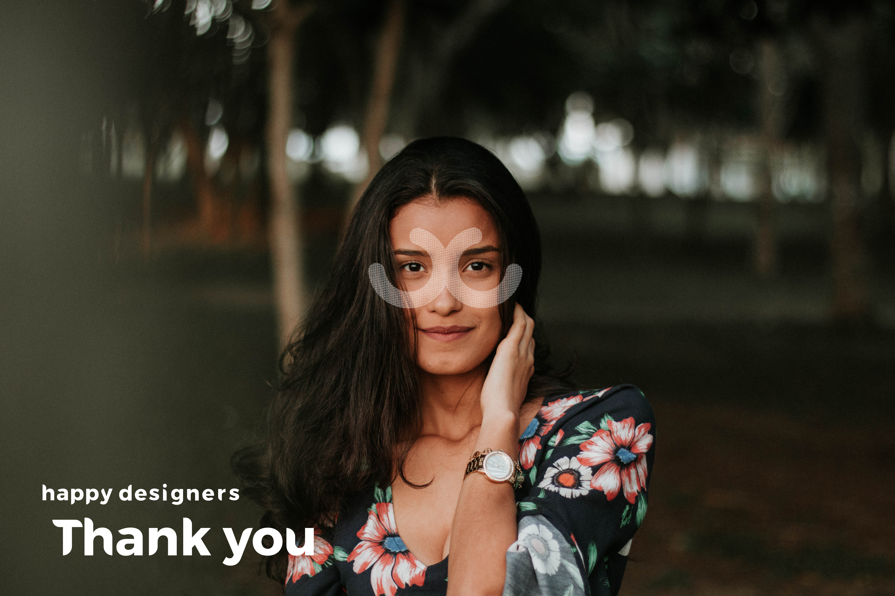
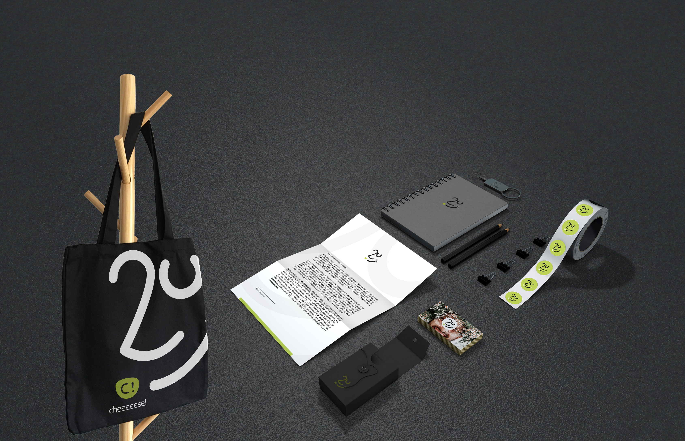

Un logo pour
le 20e anniversaire de l’agence.
Projet retenu & réalisé
Le concept de ce logo est de mettre en avant les HAPPY designers qui travaillent au sein de l’agence.
Ainsi, ce logo représente un clin d’oeil à la philosophie de l’agence afin de la partager, de la rappeler/présenter.
L’objectif était de développer un logo 20 ans retranscrivant un visage souriant, avec une pointe d’humour. Après tout, c’est un anniversaire alors, sourions !
Ce logo sera utilisé par les happy designers tout au long de l’année 2020.... Bon anniversaire !


